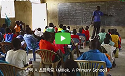

초록TUBE
재단활동 > 초록TUBE"/>
초록우산 어린이재단 영상 갤러리
-
<스타 서포터즈> 제가 받은 사랑을 돌려드리고 싶어요(박보영편)...
-
<어린이는 우리의 미래>당신만의 어른이날을 만드(염정화편)...
-
[초록우산 어린이재단] 대한민국에서 어린이로 산다는 것...
-
[초록우산 어린이재단] 나영이의 소원 '소재원 작가'
-
[초록우산 어린이재단] 사랑, 하나 더 & Rock n' Roll
-
[초록우산 어린이재단] 사랑, 하나 더
-
[초록우산 어린이재단] 설경구가 말하는 '나영이의 소원'
-
[초록우산 어린이재단] 아버지 마음속 효정이는 여전히 아홉 살입니다.
-
[초록우산 어린이재단] 염정아가 전하는 베이비박스
-
[초록우산 어린이재단] 희망의 춤을 추는 아이, 소문정
- 
[초록우산 어린이재단] 남수단 스쿨키트 모금 캠페인

[초록우산 어린이재단] 아이가 사라지는 시간은?